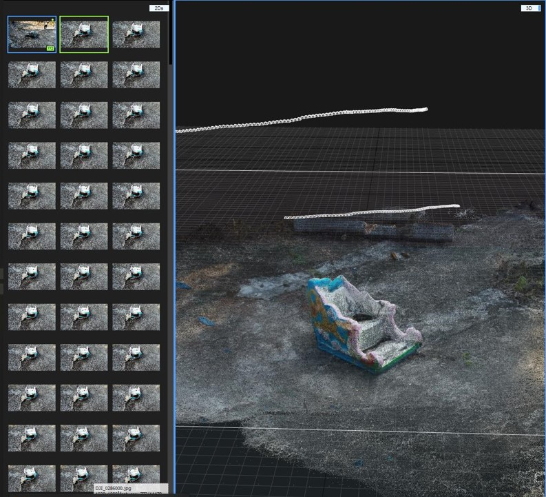
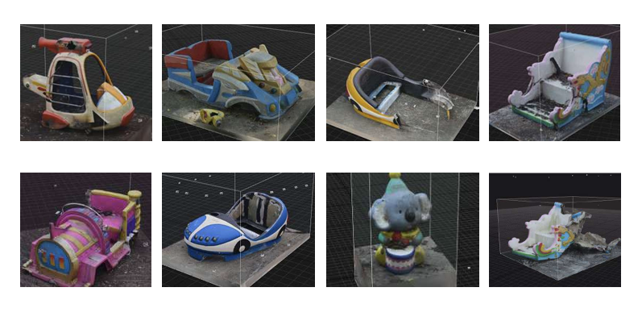
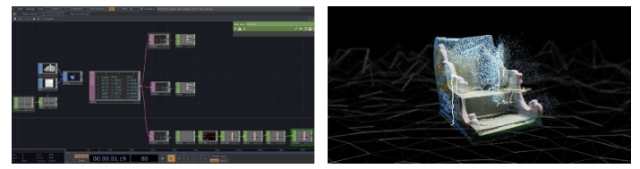
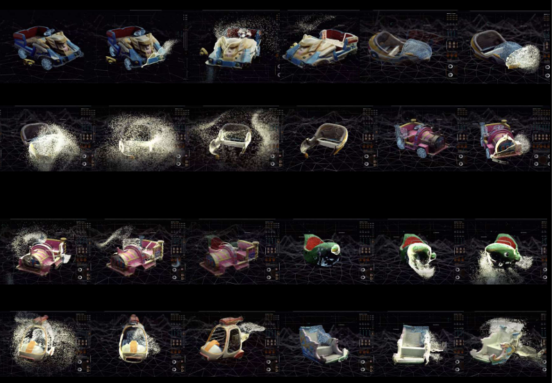

忆音修复园
项目背景 Concept
概念源于深圳儿童乐园的拆除。许多儿时生活、玩乐的地方变得残破不堪，逐渐被遗忘。 我们无法用物理手段补全残缺的记忆，因此尝试用声音作为情感载体，来修复这些有温度的建筑物。
空间再现
借助虚拟的空间体量来塑造记忆的真实性与自我的认同感，使抽象概念具象化。
声音修复
收集游乐园的音乐与孩子们的欢笑声，在 Audacity 中处理后作为驱动源。
技术实现 Technical Workflow
从实地扫描到粒子重构的完整流程：

01. 实地扫描与重建
对游乐设施进行多角度实地拍摄，导入 RealityCapture 生成高精度三维点云模型。

02. 模型优化
修复扫描破损，优化网格拓扑，为粒子特效做准备。

03. TD 数据驱动
在 TouchDesigner 中提取音频数据，通过 OSC 传输坐标与强度信息。

04. 粒子视觉化
利用 X-particles 模拟“记忆消散与重组”的视觉效果，呈现多层次的深度。